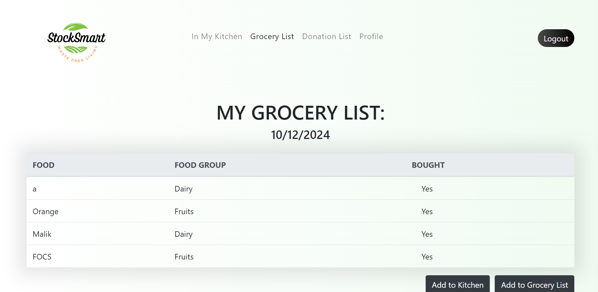
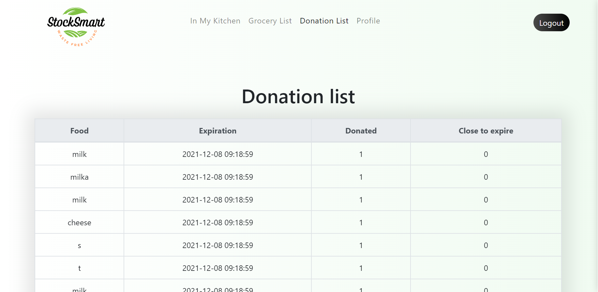
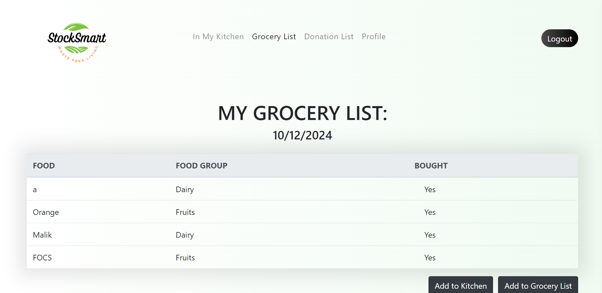
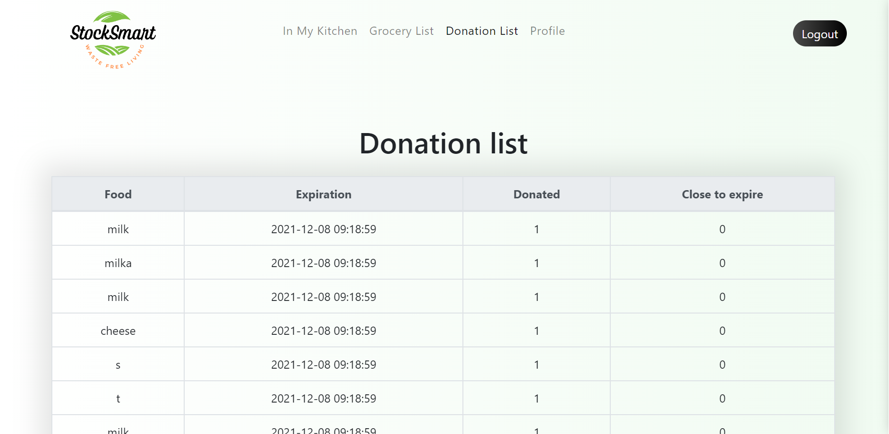
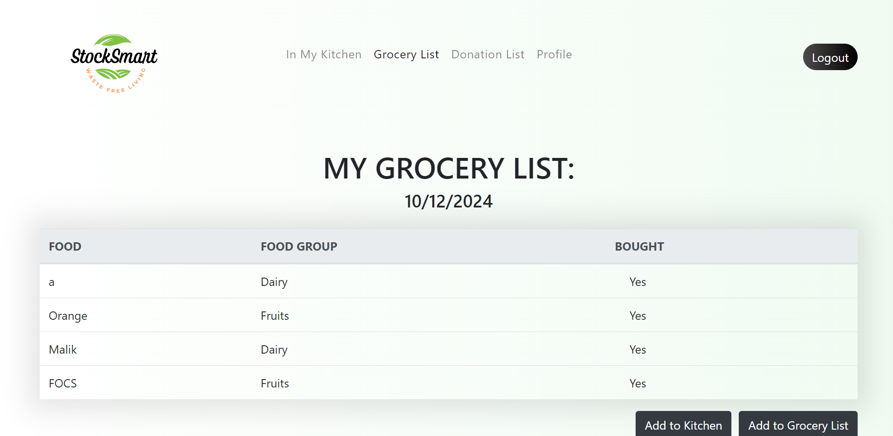
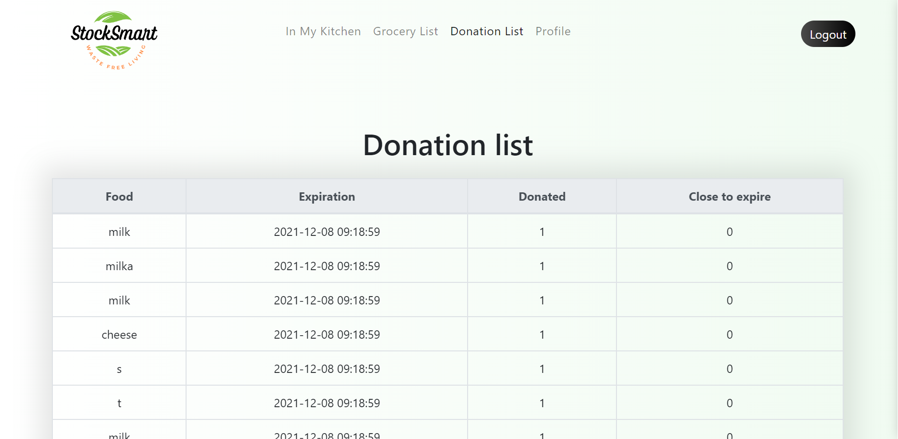
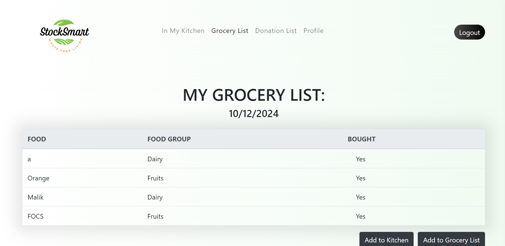
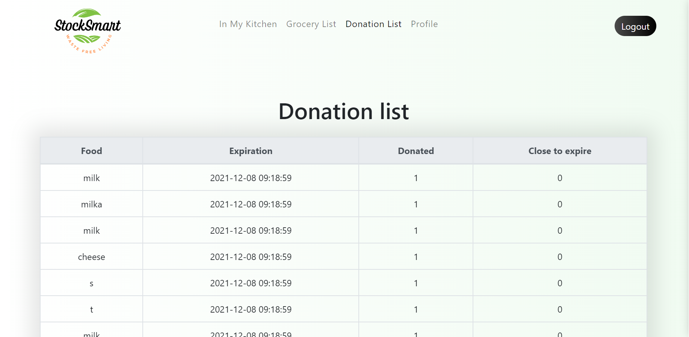

 



This project was focused on developing a web application to efficiently manage food stocks and help prevent food waste. The application generates alerts when food items are nearing their expiration dates, encouraging donations to underprivileged groups before spoilage occurs.
My team and I worked on both the front-end and back-end of the system, ensuring seamless integration between user interfaces and database functionality. My primary contribution was building the donation page, where users could register food items for donation. I also helped develop the login system using PHP for user authentication and access control.
The system was designed with scalability in mind, and we incorporated various technologies, including PHP, JavaScript, HTML, and CSS, to handle data interactions and ensure a responsive, user-friendly experience.